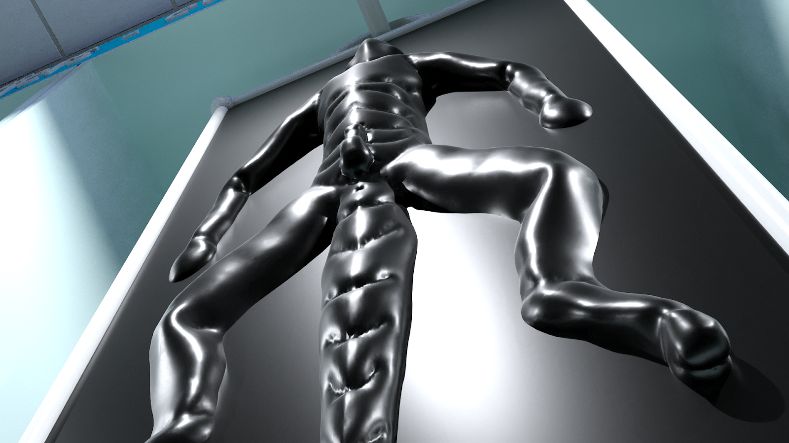

A Taste of His Own Medicine - Part 1
Written by TwistedSnakes
Commissioned by Akelun, Dracoshu, and KILLERDR4G0N
Illustrations Rendered by Dracoshu

A beam of light from a flashlight cut through the darkness of the underground warehouse. Shu was making his last patrol around the warehouse to make sure everything was in place. Unlike a regular warehouse, the worry wasn't only that people would come in and steal the goods: the goods might escape too. The blue wingless dragon was a slave trader and this warehouse was where they stored their "stock".
This slave-trading business was co-owned by Shu and a black dragon named Clemos, his partner in crime. While their actions were illegal, the pair didn't mind it too much. After all, there was money to be made from abducting young, muscular men, stripping away their humanity, and selling them off as slaves to buyers who were more than willing to ignore the legal technicalities in favour of their own enjoyment.
Shu swung his flashlight between the racks where metal frames were hanging. There was a faint movement coming from them and the dragon turned quickly to look for the source. One of the metal frames were shaking. A thick, rubber sheet was stretched across its front and back. Outlined under the rubber was the form of a canine's body, quietly whimpering as the figure struggled.
"Go to sleep," Shu ordered, slapping his palm sharply on the crotch of the canine, eliciting a yelp of pain and surprise. "We're having 'guests' over tomorrow so you need to look your best. Tired slaves don't sell well," he walked up to the canine who was still whining.
"You don't want to go back for 'training', do you?" he threatened.
There was a soft whimpering sound that trailed off into silence as the canine stopped struggling, letting himself relax as the rubber pulled his limbs back into a spread eagle form. Satisfied, Shu looked around the area. In front and behind of the canine were more metal frames, each with a slave trapped inside. In fact, there were numerous frames hanging across each of the long racks that sat in the warehouse, storing immobile people in their rubber prison as they awaited their "redemption". What good was a slave if he had no master to serve?
Shu patrolled between the racks as he made sure that the other slaves weren't awake, or worse, trying to escape. However, nothing looked out of place and Shu heaved a sigh of relief. This business was his pride and joy. He and Clemos had first started off as humble slave traders, buying used slaves, training them, before selling them off at a higher price. Over time, the demand for their trained slaves grew and they resorted to kidnapping to meet the demand.
The main bottleneck, however, was in the inefficient storage of slaves. At that time, they had stored their slaves in metal prisons and cages, allowing them to store only twenty to forty of them at a time in this warehouse. That is until Shu tapped on his engineering expertise and hooked their slaves up to a massive life-support system and stored them in flat panels like they were doing now. At this point in time, they had over five hundred slaves in the warehouse and they had space for a thousand more.
Despite all that scaling up, they had managed to continue running the company with just the two of them. With no need to hire and train new employees, they could keep the cost of their slaves low and value high. With all that happening in a span of only five years, how could he not feel proud of his achievements?
Despite everything, Shu wasn't one to rest on his laurels. His next project would tackle the next bottleneck they were facing: slave training. He had been working on a new drug which, if worked, would mean they no longer had to spend days breaking each slave down from struggling prisoners to subservient objects. All it would take was one night with the drug and they would be hungry for the cocks of their future masters.
The best part? When they were manually training each slave, they'd need about three days, give or take, to train a slave. One slave would take three days, a hundred slaves would take three hundred days. With the miracle drug, they could feed a hundred slaves and leave them for a night. One night, one hundred slaves. They could grow into the biggest slave supplier in Bhurea, maybe even the world.
He was almost done with the development, All that remained to do was to test and tweak the drug. That could wait until tomorrow. For now, he would finish up his patrol and get some much-needed rest.
As he turned the corner, he spotted a figure swiftly duck behind another row of racks.
"Hey! Stop!" Shu shouted as he gave chase. If that person was an intruder, they had to be stopped. If they were an escaping slave, well, there would be some more training to do. A good excuse to test the drug. Either way, he had to catch the person.
He ran to the next row of racks where the figure had disappeared behind, shining his light into the face of the person.
"Ah hah!" he shouted triumphantly.
"Hey hey! It's me," the figure cried, raising his hands to shield his eyes from the bright light, "Put the flashlight down."
"Clemos?" Shu asked, "What are you doing here?"
"Doing my night patrol?" the dragon raised one brow quizzically before pointing to the flashlight, "So that's where the flashlight went. I was looking all over for it."
"Wait, it's my turn tonight, isn't it?" Shu raised one brow quizzically.
"No? Did you check the schedule?" Clemos squinted back, "You're taking tomorrow."
"Huh? I could've sworn...ah nevermind, I might've checked it wrong. Guess I'll help you close up the warehouse tonight then," Shu shrugged.
"Haha, yeah," the black dragon nodded stoically, standing stiffly with his arms hanging by his sides.
Shu turned around and made his way to the office. There was a sound of heavy footsteps behind him as the dragon approached him swiftly from behind. For a split second, he felt the rush of wind near his head as a blunt force struck the side of his temple and everything went black.
Shu woke up to a bright surgical light shining in his face. The light was made up of clusters of bulbs arranged neatly around the metal disc. The sight was familiar: he was in his research laboratory where he had been developing the drug. Did he fall asleep at work again? Ugh, he should really stop overworking himself and get more sleep.
He tried to get up but metal restraints around his wrists, ankles, and neck held him down.
"What the-" he gasped. What happened last night? He furrowed his brows for a moment before he remembered the previous events.
"Clemos," he grunted angrily,
As if on cue, the black dragon appeared, leaning over him with a smug grin.
"You called?" Clemos smirked.
"Clemos! What's the meaning of this?" Shu demanded.
"You had it coming, Shu. I know what you are trying to do, but it's not happening. I'm putting an end to your plans now."
"What are you even talking about?"
"Don't play dumb with me. You're trying to get rid of me."
"What?" Shu gasped incredulously.
"Oh yes, I knew. When you started automating all the slave storage system, at first, I thought it was a great idea. But the more I thought about it, the more I realized something was wrong. You're making it easier for you to run the company without me."
"What? You're crazy!"
"Heh, that's what I thought at first. I gave you the benefit of doubt and trusted you. Until this," Clemos raised up a stack of papers that Shu immediately recognized as his research notes.
"What about that?" Shu asked angrily.
"Don't think I didn't see through your plans, Shu. This is an aphrodisiac that you are making to train slaves. No effort needed."
"Yes," Shu grunted in annoyance," Your point?"
"You did it behind my back!" Clemos seethed.
"It was going to be a surprise!" Shu protested, "It's not like you know how to help me out with the research anyway!"
"Bullshit! You want to replace me! No need for a partner to store, train, and sell slaves when you have all your machines to do it for you."
"You're delusional! None of that is true! It's all in your head, just your imagination!" Shu struggled against his restraints.
"Is that what you think? No, I know the truth. And with these machines, I'll be the biggest slave trader in the whole world. Nothing can stop me now," the black dragon turned to the bound dragon, "Not even you."
"What do you mean? What are you trying to do?" Shu asked angrily.
"You'll be the first slave to be trained. With your own drug, no less," Clemos grinned, "I hope you understand the irony of the situation."
"You're crazy. Let me go this instant!"Shu grunted.
"How about no?" the black dragon smirked in response. He stepped backwards and went over to the computer terminal. "And your password is-"
"I'm not telling you anything!" Shu shouted.
"Oh don't worry, I already know," he entered "0perati0nM!ndSl@ve" into the terminal. There was a victorious beep as the system let him in.
"Maybe you should be careful the next time you get drunk around me," Clemos taunted. "If there is a next time," he added.
"Stop this at once!" Shu demanded but four metal arms from the ceiling were already descending towards him, each one clamping their metal clamps on each of his limbs.
The metal restraints on the table released him and the metal arms pulled his body into a spreadeagle position. A metal tentacle with a dildo at its end snaked its way towards his mouth. The feeding tube they use to sustain slaves in their rubber prisons. Shu clamped his jaw shut and turned his head away in a desperate attempt to resist the tube.
The tube, however, was persistent as it hovered over him, tracking his head movements as he writhed in his bindings. Suddenly, a strong burst of electricity through his body caused him to gasp in pain. The tentacle used the opportunity to force itself between Shu's jaws, gagging him securely. The struggling dragon grunted indignantly, beginning to regret implementing the electro-gagging system that was no being used against him.
The system, however, was not done with him yet. The metal arms lifted him up so that he was suspended in the air. Sliding mechanisms placed two metal frames with rubber sheets under and over him, and the tentacle positioned itself in a groove at the top of the frame above his head.
"Mfft hgnff gwrh!" Shu protested through the dildo gag in a desperate but futile attempt to change Clemos' mind. The two frames were closed shut and a vacuum pump began sucking the air out from between the two sheets. Inside his dark prison, Shu could feel the thick latex press tightly against his scales, squeezing every curve and inch of his reptilian body.
The metal arms released themselves and slid out from under the sheets but the trapped dragon had no freedom left to move. Each tug and push of his arms and legs only stretched the rubber a little before the tension won out and pulled him back into place.
"Gwrghh! Mrwrr ragh hftt!" his frantic and muffled screams filled the room.
"Ugh, you're so noisy. Nothing your new drug can't fix though," his captor grumbled, "I'm going to send you into storage and begin your 'processing'. Don't wake the other slaves up with your screams, thanks."
With a whir, Shu could feel his rubber prison raised to a vertical position before sliding along rails into the rest of the warehouse. Apart from his screaming and thrashing body, he would be just another indistinguishable body in the rows of slaves. The dragon's frame came to a halt between two more latex-encased bodies.
After a few minutes, Shu stopped screaming. Breathing through the mouth tube only gave him so much air and he didn't want to squander it by calling for help among slaves who couldn't free themselves, much less him. The silence of the warehouse began to set in and the dragon hung defeated in his prison.
Suddenly, a strangely sweet liquid was pumped into his mouth and forced down his throat.
"Mft!" Shu began struggling again. He was being fed a taste of his own medicine, literally. The drug was an aphrodisiac meant to turn a captive person into a horny and sex-hungry slave. Thirsty to cum, the slave would mindlessly follow all instructions just for the reward of release.And Shu was going to be turned into one of them. One cup of the potent drug was enough to keep a slave on edge for the next six months. The amount that was he was being fed, however..."Mfft!" Shu writhed in earnest, desperate for some form of escape, maybe a weakness in the latex, any sign of hope. Nothing. He was being fed enough of the drug that would keep him horny for many years to come.
In fact, he was beginning to feel its effects. His mind began to cloud and his senses began to dull. His movements turned sluggish and his struggles came to a halt. All he really wanted now was just a little bit of...
No! He needed to fight it! He needed to focus, to escape. This was no time for giving into his pleasures. He shifted between the latex sheets.
"Mrr!" he moaned as the tight rubber grinder against his crotch as he moved. He was starting to get turned on by the experience. Just a bit more. He rocked his hips and enjoyed the overwhelming euphoria that came with the friction. His member was slowly emerging through his slit, squeezed between his abdomen and the latex by the pressure of the vacuum.
He ground his hips more, slowly working himself up. But no matter how much his cock twitched, he could not reach orgasm.
"Hfnggg," he moaned desperately. He'd give anything to be able to cum.
Anything? What about escape? He struggled again. No. Escape could wait. He wanted release and he wanted it now.
But no matter how much he tried he couldn't find release. All he could do was to keep thrusting and thrusting until help came.
"A slave, eh, Mr Draco?" Clemos held the door to the storage room open. "I have just the one for you. He just came in yesterday, but he's such a natural he is one of the most eager slaves we have."
A blue and black sergal entered through the door and Clemos let it close.
"I believe you. You guys have never disappointed me before," the sergal nodded. "Come, show me the goods."
The black dragon led the sergal between the racks until they came to a metal frame where Shu had been only a mere eight hours ago. Clemos pulled the metal frame out of the rack, sliding it along the rails where it hung in front of Draco. The dragon inside the frame was hanging limply in the sheets and the sergal admired the build of the slave trapped inside.
"Very nice body," he nodded. "Is he virile?"
"Why yes, of course!" Clemos grinned. Taking out a vibrating wand, he turned it on and pressed it against the trapped dragon's crotch. Within seconds, the dick had emerged from its slit and stood erect against the rubber. Clemos nudged and stroked the rock-hard member, massaging it up and down its entire length.
The draconic slave within began rocking his hips furiously, as if there was nothing else in the world that mattered apart from finding release immediately. Suddenly, the vibrating wand was turned off, leaving the poor dragon thrusting in the air, begging for stimulation that was no longer there.
"And as usual, I would like to test the product," Draco commented flatly, trying to hide his excitement on his face. However, the bulge in his pants gave his intentions away.

"Sure, that's no problem as well," the black dragon nodded. Unhinging the metal frames apart, he pried the two sheets of rubber apart and a blue dragon slid out from beneath the rubber, stumbling weakly to his knees as he grabbed his hard shaft and tried to pleasure himself.
"Slave, do you want to cum?" Clemos offered in a stern voice. Almost immediately, the blue dragon looked up at Clemos with a glazed look in his eyes and nodded enthusiastically.
"This is Draco. Serve him, and maybe I'll let you cum," the black dragon smirked.
The sergal unzipped his pants and pulled his underwear down, revealing his own member which was twitching in anticipation. Without hesitation, the blue dragon crawled over to Draco and slurped the entire length of his dick.
"Whoa, h-hey!" Draco gasped in surprise, which quickly gave way to pleasure as his member was sucked with utmost fervour. The furious thrust of the slave's head as his lips wrapped around the girth of his thrust made Draco feel like he was fucking the tightest of asses. Combined with the sensation of the draconic tongue exploring his dick's underside, the sergal felt like he was in heaven.
Before he knew it, he had grabbed the dragon by his short horns and was thrusting his head back and forth in time with his rocking hips. The sound of the two panting people were the only things that could be heard in the warehouse. To them, nothing else mattered.
There was a loud gap and Draco shuddered, spewing his lead into the dragon's mouth. The dragon did not hesitate. Within seconds, he had slurped up all the cum in his mouth and had knelt down to lap up the leftovers on the ground.
Once everything was cleaned up, the slave reached out for Draco's softening cock again.
"Whoa, heel. You are one eager slave, are you?" the sergal grinned before zipping his pants and turning to Clemos. "I'll be taking this one," he told the black dragon.
"Want to try out your other choices, Mr Draco?"
"No need, this one has exceeded my expectations. Say, where's Shu, actually? I remember him selling me my previous slave a few years back," Draco mused as he tried to recall the face of his previous slave dealer.
"Oh, Shu?" Clemos stole a look at the blue dragon crouched on the ground, eyeing the sergal's crotch eagerly. "I'm afraid he's left the business," he lied.
"Oh, well he was the-" Draco began.
"You know what," the dragon quickly interrupted him, "Promise to come back again and I'll give you this slave for free."
"Wait what, really?" the sergal grinned at Clemos incredulously, not believing his luck.
"Yeah, sure. We've had really good business this year and we'd like to give back."
"We?" Draco raised one brow.
"I mean, 'we' as in the slaves and I," the dragon quickly corrected himself as he pulled the blue dragon to his feet and pushed him towards the office. "Let's get to signing the ownership contract. Long day ahead."
"I understand. With a business like that, time is money," Draco set aside his suspicions as he grinned and followed the black dragon into the office. He closed the door behind him and the lights turned off, leaving behind the hundreds of slaves in the dark, trapped in their prison as they were fed an endless supply of the sweet nectar, keeping them horny for many years to come.
~ End ~